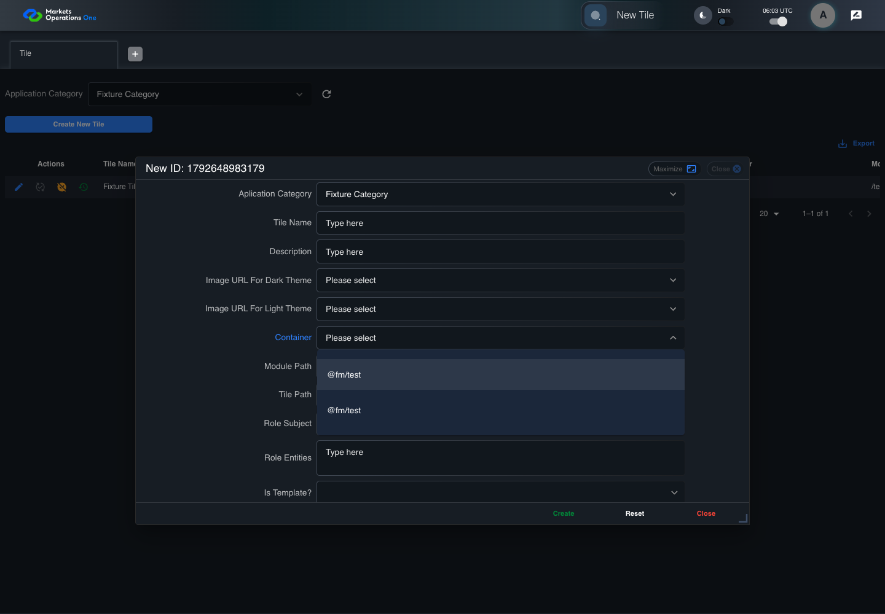

UI-RISK-007 administration source risk with live evidence
FAIL · application/run-050/ui-risk-007-administration-source-risk-with-live-evidence-e0e16d61ed19-attempt-1 · ACTUAL_APPLICATION_LOCAL_SERVICES
Actual React administration screens. Controlled browser credentials, role, records, and BFF responses. Save probes persist the received UI payload without replacing it with expected values. Declared clock emulation controls field timers. Proposed accessibility and source-risk expectations remain separate from business approval.
2026-10-22T06:02:59.754Z to 2026-10-22T06:03:10.001Z
Assertions and result · Artifact manifest · Exact run inputs and source hashes
Result SHA-256:37785157ee143c34836d89a46fa483c6e29249b8e7ae1c25b699e59db9734610Retained failure details
[
{
"message": "Error: \u001b[2mexpect(\u001b[22m\u001b[31mlocator\u001b[39m\u001b[2m).\u001b[22mtoHaveCount\u001b[2m(\u001b[22m\u001b[32mexpected\u001b[39m\u001b[2m)\u001b[22m failed\n\nLocator: getByRole('option', { includeHidden: true }).filter({ hasText: /71/ })\nExpected: \u001b[32m1\u001b[39m\nReceived: \u001b[31m0\u001b[39m\nTimeout: 5000ms\n\nCall log:\n\u001b[2m - Expect \"toHaveCount\" getByRole('option', { includeHidden: true }).filter({ hasText: /71/ }) with timeout 5000ms\u001b[22m\n\u001b[2m - waiting for getByRole('option', { includeHidden: true }).filter({ hasText: /71/ })\u001b[22m\n\u001b[2m 14 \u00d7 locator resolved to 0 elements\u001b[22m\n\u001b[2m - unexpected value \"0\"\u001b[22m\n",
"stack": "Error: \u001b[2mexpect(\u001b[22m\u001b[31mlocator\u001b[39m\u001b[2m).\u001b[22mtoHaveCount\u001b[2m(\u001b[22m\u001b[32mexpected\u001b[39m\u001b[2m)\u001b[22m failed\n\nLocator: getByRole('option', { includeHidden: true }).filter({ hasText: /71/ })\nExpected: \u001b[32m1\u001b[39m\nReceived: \u001b[31m0\u001b[39m\nTimeout: 5000ms\n\nCall log:\n\u001b[2m - Expect \"toHaveCount\" getByRole('option', { includeHidden: true }).filter({ hasText: /71/ }) with timeout 5000ms\u001b[22m\n\u001b[2m - waiting for getByRole('option', { includeHidden: true }).filter({ hasText: /71/ })\u001b[22m\n\u001b[2m 14 \u00d7 locator resolved to 0 elements\u001b[22m\n\u001b[2m - unexpected value \"0\"\u001b[22m\n\n at /Users/lushevol/code/github/ratan-release-impact/workbench/e2e/audit-specs/admin-ux.spec.ts:239:177\n at AuditCapture.step (/Users/lushevol/code/github/ratan-release-impact/workbench/e2e/support/audit-fixture.ts:94:21)\n at /Users/lushevol/code/github/ratan-release-impact/workbench/e2e/audit-specs/admin-ux.spec.ts:199:31",
"location": {
"file": "/Users/lushevol/code/github/ratan-release-impact/workbench/e2e/audit-specs/admin-ux.spec.ts",
"column": 177,
"line": 239
},
"snippet": " 237 | if (text.includes('Create New Tile') && text.endsWith('is disabled')) { await expect(app.panel.getByRole('button', { name: 'Create New Tile', exact: true })).toBeDisabled(); return; }\n 238 | if (text.startsWith('exactly 2 options')) { await expect(page.getByRole('option', { includeHidden: true }).filter({ hasText: /^@fm\\/test$/ })).toHaveCount(2); return; }\n> 239 | if ((match = /option displays record ID \"(\\d+)\"/.exec(text))) { await expect(page.getByRole('option', { includeHidden: true }).filter({ hasText: new RegExp(match[1]) })).toHaveCount(1); return; }\n | ^\n 240 | if ((match = /^Admin A clicks icon button named \"Audit\" inside row with Record Id \"(\\d+)\"/.exec(text))) { await app.action('Audit', match[1]).click({ timeout: 5000 }); return; }\n 241 | if (text.includes('explicit empty-history status')) { await expect(app.panel.getByRole('status').filter({ hasText: /(?:no|empty).*history/i })).toBeVisible(); return; }\n 242 | if (text.includes('identifies source record \"102\"') || text.includes('each cell in the \"Category ID\"')) { await expect(app.auditDialog().locator('[data-id] [data-field=\"applicationCategoryId\"]')).toHaveText(['102']); return; }"
}
]Screenshot capture: CAPTURED. Named frames: 6.
Step screenshot bindings: INCOMPLETE. 5/6 canonical steps have execution screenshots.
Bindings measure structural coverage only. They do not establish screenshot content quality or relevance.
Screenshot content review: NOT_REVIEWED. Recorded context: 0/6 frames. Identical image bytes: 2 repeated frames. Recorded context does not establish human visual review.
Step 6 has no screenshot from an executed step.
Canonical step timeline
Given Admin A is authenticated as fixture UI-ADMIN-01 with the case-specific permissions
Execution: PASSED.
1. step-01 Visible state after step 1: Given Admin A is authenticated as fixture UI-ADMIN-01 with the case-specific permissions
2026-10-22T06:03:01.996Z · 1440×1000
Step: /Users/lushevol/code/github/ratan-release-impact/workbench/tasks/ui-test-coverage-20261022/test-cases.md:10334
SHA-256:27d6bd720b7273dbdbe6e5e177f63bf71c3bf364f547bc4e60358e7a3a6e9877And two import map records 71 and 72 both use Module Name @fm/test
Execution: PASSED.2. step-02 Visible state after step 2: And two import map records 71 and 72 both use Module Name @fm/test
2026-10-22T06:03:03.820Z · 1440×1000
Step: /Users/lushevol/code/github/ratan-release-impact/workbench/tasks/ui-test-coverage-20261022/test-cases.md:10335
SHA-256:9415809a077e1c5ffd2d11294f5dd3836004ea5688dbace62c81dd7438149f8dWhen Admin A opens combobox named "Container" inside the new-record dialog inside the "Tile" administration tabpanel
Execution: PASSED.
3. step-03 Visible state after step 3: When Admin A opens combobox named "Container" inside the new-record dialog inside the "Tile" administration tabpanel
2026-10-22T06:03:04.167Z · 1440×1000
Step: /Users/lushevol/code/github/ratan-release-impact/workbench/tasks/ui-test-coverage-20261022/test-cases.md:10336
SHA-256:2766c18a8a9975e8dde4c89b033680265b739f6df49f52d410dabd929155be4bThen exactly 2 options with Module Name "@fm/test" exist in the Container popup
Execution: PASSED.
4. step-04 Visible state after step 4: Then exactly 2 options with Module Name "@fm/test" exist in the Container popup
2026-10-22T06:03:04.320Z · 1440×1000
Step: /Users/lushevol/code/github/ratan-release-impact/workbench/tasks/ui-test-coverage-20261022/test-cases.md:10337
SHA-256:e15cb66d70a1c6b356c30584c5a8a8ce5cc77c0267a4f3c11eacaa72da1da89bAnd one option displays record ID "71"
Execution: FAILED.5. step-05-failure Visible state when step 5 failed. Later steps did not execute.
2026-10-22T06:03:09.387Z · 1440×1000
Step: /Users/lushevol/code/github/ratan-release-impact/workbench/tasks/ui-test-coverage-20261022/test-cases.md:10338
SHA-256:2766c18a8a9975e8dde4c89b033680265b739f6df49f52d410dabd929155be4bImage bytes match frame 3. An unchanged image can be valid for consecutive assertions. This match does not establish correct step content.
And the other option displays record ID "72"
Execution: NOT_EXECUTED.No screenshot is recorded for this step. No executed state is claimed.
Additional named frames

The visible state when the test failed.
2026-10-22T06:03:09.492Z · 1440×1000Step: Test source: /Users/lushevol/code/github/ratan-release-impact/workbench/e2e/audit-specs/admin-ux.spec.ts:187
SHA-256:
e15cb66d70a1c6b356c30584c5a8a8ce5cc77c0267a4f3c11eacaa72da1da89bImage bytes match frame 4. An unchanged image can be valid for consecutive assertions. This match does not establish correct step content.
Screenshots establish visible state only. Assertions and traces support functional claims.